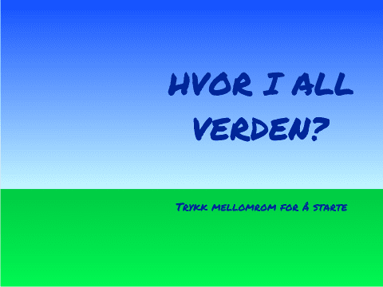

Hvor i All Verden? er et reise- og geografispill hvor man raskest
mulig skal fly innom reisemål spredt rundt i Europa. Dette er den
siste av tre leksjoner. I denne delen skal vi se på lister og hvordan
vi kan bruke dem til å velge reisemål tilfeldig. Vi vil avslutte med å
lage en skikkelig intro til spillet.
Steg 0: Forrige gang
Vi fortsetter nå med det programmet vi laget i del 1 og del 2.
Sjekkliste
Sjekk spesielt at
Steg 1: Lag lister
Vi skal nå flytte reisemålene våre over i lister. Dette vil gjøre det
enklere både å legge til flere reisemål, og å velge reisemål
tilfeldig.
Sjekkliste
når jeg mottar [Lag lister v]
legg [London] til [steder v]
legg [Oslo] til [steder v]
legg [Barcelona] til [steder v]
Bruk gjerne de samme reisemålene som du allerede har.
slett (alle v) i [steder v]
i koden før du legger til det første reisemålet.
En liten utfordring med lister er at de bare inneholder en type
verdier. For eksempel stedsnavn i dette tilfellet. Men for reisemålene
må vi holde styr på tre ting: Stedsnavnet og de to koordinatene som
sier hvor stedet ligger. En måte å gjøre dette på er å bruke tre lister.
når jeg mottar [Lag lister v]
slett (alle v) i [steder v]
slett (alle v) i [stederX v]
slett (alle v) i [stederY v]
legg [London] til [steder v]
legg [-135] til [stederX v]
legg [-30] til [stederY v]
legg [Oslo] til [steder v]
legg [-30] til [stederX v]
legg [75] til [stederY v]
legg [Barcelona] til [steder v]
legg [-135] til [stederX v]
legg [-175] til [stederY v]
Pass på at de tre listene er samkjørte slik at det er verdier for
samme reisemål som står for eksempel øverst i hver liste.
Steg 2: Velg et reisemål tilfeldig
La oss begynne å bruke listene våre til å velge steder å reise til
tilfeldig.
Sjekkliste
når jeg mottar [Nytt spill v]
send melding [Lag lister v]
vis
send melding [Nytt sted v] og vent
når jeg mottar [Nytt sted v]
sett [sted v] til (tilfeldig tall fra (1) til (lengden av [steder v]))
Reis til (element (sted) av [steder v]) (element (sted) av [stederX v]) (element (sted) av [stederY v]) :: custom
Steg 3: Fjern reisemål fra listen
I spillet vårt hender det at samme reisemål blir tilfeldig valgt
flere ganger etter hverandre. Dette kan vi enkelt unngå ved å fjerne
reisemål fra listene etterhvert som vi finner dem.
Sjekkliste
slett (sted) i [steder v]
slett (sted) i [stederX v]
slett (sted) i [stederY v]
Den enkleste måten å unngå dette problemet på er å gi færre
oppgaver eller legge inn flere reisemål i listene!
Alternativt kan du øverst i Nytt sted-blokken legge inn en
hvis-test som sjekker om lengden av steder
er 0. Hvis den er det kan du sende en ny Lag lister-melding for
å bygge listen på nytt.
Steg 4: En introduksjon
Vi er nå nesten ferdige med spillet vårt. Men vi vil forbedre det som
kalles programflyten slik at vi får en startmeny, og slik at vi kan
spille flere ganger.
Sjekkliste

Kall denne bakgrunnen for meny.
Vi skal nå sende flere meldinger som definerer programflyten. Vi vil
at menyen vises når vi klikker på det grønne flagget. Fra menyen vil
vi at et nytt spill starter når vi trykker mellomrom-tasten. Når
spillet er slutt vil vi at menyen skal vises igjen. Vi kan tegne
programflyten omtrent som dette:
når grønt flagg klikkes
send melding [Vis meny v]
når jeg mottar [Vis meny v]
bytt bakgrunn til [meny v]
når [mellomrom v] trykkes
hvis <(bakgrunnsnavn) = [meny]>
send melding [Nytt spill v]
slutt
når jeg mottar [Nytt spill v]
bytt bakgrunn til [spill v]
når jeg mottar [Spill slutt v]
send melding [Vis meny v]
Sammenlign disse skriptene med programflyten over. Ser du hvordan
de henger sammen?
Spillet slutter etter at vi har besøkt reisemålene. Det betyr at
vi må sende en melding Spill slutt etter
gjenta-blokken på sted-figuren.
Legg til denne meldingen og prøv spillet ditt. Virker
programflyten? Starter spillet når du trykker mellomrom? Kommer du
tilbake til menyen når spillet er slutt?
når jeg mottar [Spill slutt v]
skjul
stopp [andre skript i figuren v] :: control
Med stopp-klossen passer vi på at alle skriptene
stopper når spillet er slutt.
Test prosjektet
Klikk på det grønne flagget.
Steg 5: Ta tiden
For å gjøre spillet litt mer spennende avslutter vi med å gi
spilleren begrenset tid til å finne reisemålene.
Sjekkliste
Test prosjektet
Klikk på det grønne flagget.
Legg ut prosjektet
Nå er vi ferdige med spillet! Veldig bra! Vi håper du har lært mye
spennende gjennom disse leksjonene. Du kan dele spillet med familie
og venner ved å trykke Legg ut øverst til høyre på skjermen.
Prøv selv
legg [Reykjavik] til [steder v]
legg [-215] til [stederX v]
legg [210] til [stederY v]
legg [Roma] til [steder v]
legg [-30] til [stederX v]
legg [-180] til [stederY v]
men det er enda bedre om du finner på dine egne reisemål. Husk det
trenger ikke bare være byer, det kan også være fjell, sjøer eller
kanskje land!
Helt til slutt, husk at dette er ditt spill som du har laget! Du
bestemmer selv hvordan du vil at spillet skal fungere!
Forbedre denne siden
Funnet en feil? Kunne noe vært bedre? Hvis ja, vennligst gi oss tilbakemelding ved å lage en sak på Github eller fiks feilen selv om du kan. Vi er takknemlige for enhver tilbakemelding!